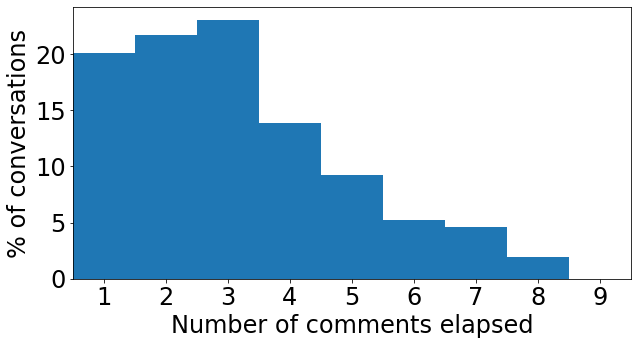

# start by installing ConvoKit on the colab VM
!pip install -q convokit
CRAFT demo (fine-tuning and inference) using ConvoKit
This example notebook shows how to fine-tune a pretrained CRAFT conversational model for the task of forecasting conversational derailment, as shown in the “Trouble on the Horizon” paper (note however that due to nondeterminism in the training process, the results will not exactly reproduce the ones shown in the paper; if you need the exact inference results from the paper, see the inference-only version of this notebook).
# import necessary libraries, including convokit
import torch
from torch.jit import script, trace
import torch.nn as nn
from torch import optim
import torch.nn.functional as F
import pandas as pd
import numpy as np
import matplotlib.pyplot as plt
import nltk
import requests
import os
import sys
import random
import unicodedata
import itertools
from urllib.request import urlretrieve
from convokit import download, Corpus
%matplotlib inline# define globals and constants
MAX_LENGTH = 80 # Maximum sentence length (number of tokens) to consider
# configure model
hidden_size = 500
encoder_n_layers = 2
context_encoder_n_layers = 2
decoder_n_layers = 2
dropout = 0.1
batch_size = 64
# Configure training/optimization
clip = 50.0
teacher_forcing_ratio = 1.0
learning_rate = 1e-5
decoder_learning_ratio = 5.0
print_every = 10
train_epochs = 30
# Default word tokens
PAD_token = 0 # Used for padding short sentences
SOS_token = 1 # Start-of-sentence token
EOS_token = 2 # End-of-sentence token
UNK_token = 3 # Unknown word token
# model download paths
WORD2INDEX_URL = "http://zissou.infosci.cornell.edu/convokit/models/craft_wikiconv/word2index.json"
INDEX2WORD_URL = "http://zissou.infosci.cornell.edu/convokit/models/craft_wikiconv/index2word.json"
MODEL_URL = "http://zissou.infosci.cornell.edu/convokit/models/craft_wikiconv/craft_pretrained.tar"
# confidence score threshold for declaring a positive prediction.
# this value was previously learned on the validation set.
FORECAST_THRESH = 0.570617Part 1: set up data conversion utilities
We begin by setting up some helper functions and classes for converting conversational text data into a torch-friendly Tensor format. Note that these low-level routines are largely taken from the PyTorch seq2seq chatbot tutorial.
class Voc:
"""A class for representing the vocabulary used by a CRAFT model"""
def __init__(self, name, word2index=None, index2word=None):
self.name = name
self.trimmed = False if not word2index else True # if a precomputed vocab is specified assume the user wants to use it as-is
self.word2index = word2index if word2index else {"UNK": UNK_token}
self.word2count = {}
self.index2word = index2word if index2word else {PAD_token: "PAD", SOS_token: "SOS", EOS_token: "EOS", UNK_token: "UNK"}
self.num_words = 4 if not index2word else len(index2word) # Count SOS, EOS, PAD, UNK
def addSentence(self, sentence):
for word in sentence.split(' '):
self.addWord(word)
def addWord(self, word):
if word not in self.word2index:
self.word2index[word] = self.num_words
self.word2count[word] = 1
self.index2word[self.num_words] = word
self.num_words += 1
else:
self.word2count[word] += 1
# Remove words below a certain count threshold
def trim(self, min_count):
if self.trimmed:
return
self.trimmed = True
keep_words = []
for k, v in self.word2count.items():
if v >= min_count:
keep_words.append(k)
print('keep_words {} / {} = {:.4f}'.format(
len(keep_words), len(self.word2index), len(keep_words) / len(self.word2index)
))
# Reinitialize dictionaries
self.word2index = {"UNK": UNK_token}
self.word2count = {}
self.index2word = {PAD_token: "PAD", SOS_token: "SOS", EOS_token: "EOS", UNK_token: "UNK"}
self.num_words = 4 # Count default tokens
for word in keep_words:
self.addWord(word)
# Create a Voc object from precomputed data structures
def loadPrecomputedVoc(corpus_name, word2index_url, index2word_url):
# load the word-to-index lookup map
r = requests.get(word2index_url)
word2index = r.json()
# load the index-to-word lookup map
r = requests.get(index2word_url)
index2word = r.json()
return Voc(corpus_name, word2index, index2word)# Helper functions for preprocessing and tokenizing text
# Turn a Unicode string to plain ASCII, thanks to
# https://stackoverflow.com/a/518232/2809427
def unicodeToAscii(s):
return ''.join(
c for c in unicodedata.normalize('NFD', s)
if unicodedata.category(c) != 'Mn'
)
# Tokenize the string using NLTK
def tokenize(text):
tokenizer = nltk.tokenize.RegexpTokenizer(pattern=r'\w+|[^\w\s]')
# simplify the problem space by considering only ASCII data
cleaned_text = unicodeToAscii(text.lower())
# if the resulting string is empty, nothing else to do
if not cleaned_text.strip():
return []
return tokenizer.tokenize(cleaned_text)
# Given a ConvoKit conversation, preprocess each utterance's text by tokenizing and truncating.
# Returns the processed dialog entry where text has been replaced with a list of
# tokens, each no longer than MAX_LENGTH - 1 (to leave space for the EOS token)
def processDialog(voc, dialog):
processed = []
for utterance in dialog.iter_utterances():
# skip the section header, which does not contain conversational content
if utterance.meta['is_section_header']:
continue
tokens = tokenize(utterance.text)
# replace out-of-vocabulary tokens
for i in range(len(tokens)):
if tokens[i] not in voc.word2index:
tokens[i] = "UNK"
processed.append({"tokens": tokens, "is_attack": int(utterance.meta['comment_has_personal_attack']), "id": utterance.id})
return processed
# Load context-reply pairs from the Corpus, optionally filtering to only conversations
# from the specified split (train, val, or test).
# Each conversation, which has N comments (not including the section header) will
# get converted into N-1 comment-reply pairs, one pair for each reply
# (the first comment does not reply to anything).
# Each comment-reply pair is a tuple consisting of the conversational context
# (that is, all comments prior to the reply), the reply itself, the label (that
# is, whether the reply contained a derailment event), and the comment ID of the
# reply (for later use in re-joining with the ConvoKit corpus).
# The function returns a list of such pairs.
def loadPairs(voc, corpus, split=None, last_only=False):
pairs = []
for convo in corpus.iter_conversations():
# consider only conversations in the specified split of the data
if split is None or convo.meta['split'] == split:
dialog = processDialog(voc, convo)
iter_range = range(1, len(dialog)) if not last_only else [len(dialog)-1]
for idx in iter_range:
reply = dialog[idx]["tokens"][:(MAX_LENGTH-1)]
label = dialog[idx]["is_attack"]
comment_id = dialog[idx]["id"]
# gather as context all utterances preceding the reply
context = [u["tokens"][:(MAX_LENGTH-1)] for u in dialog[:idx]]
pairs.append((context, reply, label, comment_id))
return pairs# Helper functions for turning dialog and text sequences into tensors, and manipulating those tensors
def indexesFromSentence(voc, sentence):
return [voc.word2index[word] for word in sentence] + [EOS_token]
def zeroPadding(l, fillvalue=PAD_token):
return list(itertools.zip_longest(*l, fillvalue=fillvalue))
def binaryMatrix(l, value=PAD_token):
m = []
for i, seq in enumerate(l):
m.append([])
for token in seq:
if token == PAD_token:
m[i].append(0)
else:
m[i].append(1)
return m
# Takes a batch of dialogs (lists of lists of tokens) and converts it into a
# batch of utterances (lists of tokens) sorted by length, while keeping track of
# the information needed to reconstruct the original batch of dialogs
def dialogBatch2UtteranceBatch(dialog_batch):
utt_tuples = [] # will store tuples of (utterance, original position in batch, original position in dialog)
for batch_idx in range(len(dialog_batch)):
dialog = dialog_batch[batch_idx]
for dialog_idx in range(len(dialog)):
utterance = dialog[dialog_idx]
utt_tuples.append((utterance, batch_idx, dialog_idx))
# sort the utterances in descending order of length, to remain consistent with pytorch padding requirements
utt_tuples.sort(key=lambda x: len(x[0]), reverse=True)
# return the utterances, original batch indices, and original dialog indices as separate lists
utt_batch = [u[0] for u in utt_tuples]
batch_indices = [u[1] for u in utt_tuples]
dialog_indices = [u[2] for u in utt_tuples]
return utt_batch, batch_indices, dialog_indices
# Returns padded input sequence tensor and lengths
def inputVar(l, voc):
indexes_batch = [indexesFromSentence(voc, sentence) for sentence in l]
lengths = torch.tensor([len(indexes) for indexes in indexes_batch])
padList = zeroPadding(indexes_batch)
padVar = torch.LongTensor(padList)
return padVar, lengths
# Returns padded target sequence tensor, padding mask, and max target length
def outputVar(l, voc):
indexes_batch = [indexesFromSentence(voc, sentence) for sentence in l]
max_target_len = max([len(indexes) for indexes in indexes_batch])
padList = zeroPadding(indexes_batch)
mask = binaryMatrix(padList)
mask = torch.ByteTensor(mask)
padVar = torch.LongTensor(padList)
return padVar, mask, max_target_len
# Returns all items for a given batch of pairs
def batch2TrainData(voc, pair_batch, already_sorted=False):
if not already_sorted:
pair_batch.sort(key=lambda x: len(x[0]), reverse=True)
input_batch, output_batch, label_batch, id_batch = [], [], [], []
for pair in pair_batch:
input_batch.append(pair[0])
output_batch.append(pair[1])
label_batch.append(pair[2])
id_batch.append(pair[3])
dialog_lengths = torch.tensor([len(x) for x in input_batch])
input_utterances, batch_indices, dialog_indices = dialogBatch2UtteranceBatch(input_batch)
inp, utt_lengths = inputVar(input_utterances, voc)
output, mask, max_target_len = outputVar(output_batch, voc)
label_batch = torch.FloatTensor(label_batch) if label_batch[0] is not None else None
return inp, dialog_lengths, utt_lengths, batch_indices, dialog_indices, label_batch, id_batch, output, mask, max_target_len
def batchIterator(voc, source_data, batch_size, shuffle=True):
cur_idx = 0
if shuffle:
random.shuffle(source_data)
while True:
if cur_idx >= len(source_data):
cur_idx = 0
if shuffle:
random.shuffle(source_data)
batch = source_data[cur_idx:(cur_idx+batch_size)]
# the true batch size may be smaller than the given batch size if there is not enough data left
true_batch_size = len(batch)
# ensure that the dialogs in this batch are sorted by length, as expected by the padding module
batch.sort(key=lambda x: len(x[0]), reverse=True)
# for analysis purposes, get the source dialogs and labels associated with this batch
batch_dialogs = [x[0] for x in batch]
batch_labels = [x[2] for x in batch]
# convert batch to tensors
batch_tensors = batch2TrainData(voc, batch, already_sorted=True)
yield (batch_tensors, batch_dialogs, batch_labels, true_batch_size)
cur_idx += batch_sizePart 2: load the data
Now we load the labeled Wikiconv corpus from ConvoKit, and run some transformations to prepare it for use with PyTorch
corpus = Corpus(filename=download("conversations-gone-awry-corpus"))Dataset already exists at /root/.convokit/downloads/conversations-gone-awry-corpus# let's check some quick stats to verify that the corpus loaded correctly
print(len(corpus.get_utterance_ids()))
print(len(corpus.get_usernames()))
print(len(corpus.get_conversation_ids()))30021
8069
4188# Let's also take a look at some example data to see what kinds of information/metadata are available to us
print(list(corpus.iter_conversations())[0].__dict__)
print(list(corpus.iter_utterances())[0]){'_owner': <convokit.model.corpus.Corpus object at 0x7f6424d21358>, '_id': '146743638.12652.12652', '_utterance_ids': ['146743638.12652.12652', '146743638.12667.12652', '146842219.12874.12874', '146860774.13072.13072'], '_usernames': None, '_meta': {'page_title': 'User talk:2005', 'page_id': 1003212, 'pair_id': '143890867.11926.11926', 'conversation_has_personal_attack': False, 'verified': True, 'pair_verified': True, 'annotation_year': '2018', 'split': 'train'}}
Utterance({'id': '146743638.12652.12652', 'user': User([('name', 'Sirex98')]), 'root': '146743638.12652.12652', 'reply_to': None, 'timestamp': 1185295934.0, 'text': '== [WIKI_LINK: WP:COMMONNAME] ==\n', 'meta': {'is_section_header': True, 'comment_has_personal_attack': False, 'toxicity': 0}})Now we can use the utilities defined in Part 1 to convert the ConvoKit conversational data into a tokenized form that can be straightforwardly turned into Tensors later.
# First, we need to build the vocabulary so that we know how to map tokens to tensor indicies.
# For the sake of replicating the paper results, we will load the pre-computed vocabulary objects used in the paper.
voc = loadPrecomputedVoc("wikiconv", WORD2INDEX_URL, INDEX2WORD_URL)# Inspect the Voc object to make sure it loaded correctly
print(voc.num_words) # expected vocab size is 50004: it was built using a fixed vocab size of 50k plus 4 spots for special tokens PAD, SOS, EOS, and UNK.
print(list(voc.word2index.items())[:10])
print(list(voc.index2word.items())[:10])50004
[('UNK', 3), ('.', 4), ('the', 5), ("'", 6), (',', 7), ('to', 8), ('i', 9), ('of', 10), ('a', 11), ('and', 12)]
[('0', 'PAD'), ('1', 'SOS'), ('2', 'EOS'), ('3', 'UNK'), ('4', '.'), ('5', 'the'), ('6', "'"), ('7', ','), ('8', 'to'), ('9', 'i')]# Convert the test set data into a list of input/label pairs. Each input will represent the conversation as a list of lists of tokens.
train_pairs = loadPairs(voc, corpus, "train", last_only=True)
val_pairs = loadPairs(voc, corpus, "val", last_only=True)
test_pairs = loadPairs(voc, corpus, "test")# Validate the conversion by checking data size and some samples
print(len(train_pairs))
print(len(val_pairs))
print(len(test_pairs))
for p in train_pairs[:5]:
print(p)2508
840
4365
([['i', 'notice', 'that', 'UNK', 'that', 'moved', 'UNK', 'to', 'bill', 'chen', 'citing', 'UNK', ',', 'then', 'you', 'reverted', 'this', 'change', ',', 'bill', 'chen', 'doesn', "'", 't', 'commonly', 'go', 'by', 'william', ',', 'his', 'book', 'is', 'even', 'penned', 'as', 'bill', 'chen', '.', 'from', 'what', 'i', 'read', 'in', 'wp', ':', 'commonname', 'UNK', 'seems', 'to', 'be', 'correct', ',', 'examples', 'given', 'are', 'names', 'such', 'as', ':', '*', 'UNK', '(', 'not', 'UNK', ')', '*', 'UNK', '(', 'not', 'UNK', ')', 'i', 'think', 'this', 'revert', 'may', 'have', 'been', 'a'], ['chen', 'was', 'known', 'in', 'the', 'poker', 'world', 'as', '"', 'william', '"', 'for', 'years', 'before', 'he', 'became', 'commonly', 'known', 'as', '"', 'bill', '"', '.', 'i', 'changed', 'it', 'back', 'because', 'incidences', 'online', 'including', 'usenet', 'are', 'roughly', 'equal', ',', 'nothing', 'at', 'all', 'like', 'bill', 'clinton', 'and', 'william', 'clinton', ',', 'and', 'in', 'equal', 'cases', 'using', 'the', 'real', 'name', 'seems', 'the', 'best', 'choice', '.', '(', 'the', 'UNK', 'page', 'is', 'especially', 'UNK', '.', '.', '.', 'UNK', 'in', 'the', 'page', 'title', ',', 'bill', 'in', 'the', 'page']], ['i', 'see', 'what', 'you', 'saying', 'i', 'just', 'read', 'his', 'UNK', 'profile', ',', 'it', 'struck', 'me', 'when', 'i', 'saw', 'the', 'change', 'because', 'i', 'remember', 'him', 'being', 'called', 'bill', 'when', 'i', 'watched', 'the', 'last', 'season', 'of', 'high', 'stakes', 'poker', ',', 'but', 'you', 'seem', 'to', 'have', 'many', 'more', 'years', 'experience', 'in', 'the', 'poker', '/', 'gambling', 'world', 'then', 'i', 'do', '(', 'i', "'", 'm', 'still', 'a', 'bit', 'of', 'a', 'newbie', ')', ',', 'so', 'i', 'wanted', 'to', 'check', 'with', 'you', 'first', '.', 'btw', 'as'], 0, '146860774.13072.13072')
([['no', 'more', 'than', 'two', 'editors', 'advocated', 'deletion', '.', 'UNK', 'and', 'maybe', 'UNK', '.', 'that', "'", 's', 'not', 'a', 'clear', 'consensus', 'for', 'deletion', '.', 'cheers', ','], ['in', 'the', 'future', 'please', 'don', "'", 't', 'close', 'afds', 'when', 'you', 'don', "'", 't', 'have', 'the', 'courtesy', 'of', 'reading', 'the', 'comments', '.', 'all', 'comments', 'favored', 'deletion', 'except', 'two', '.', 'please', 'don', "'", 't', 'be', 'so', 'careless', 'in', 'the', 'future', '.'], ['that', 'simply', 'isn', "'", 't', 'true', '.', 'if', 'you', 'read', 'the', 'comments', ',', 'you', "'", 'll', 'find', 'it', "'", 's', 'actually', '2', 'keep', ',', '4', 'transwiki', ',', '2', 'delete', '(', 'more', 'or', 'less', ')', '.', 'the', "'", "'", 'comments', "'", "'", 'favour', 'no', 'consensus', '/', 'transwiki', '.', 'the', '"', 'votes', '"', 'favour', 'delete', ',', 'but', 'voting', 'is', 'evil', ',', 'of', 'course', '.', '.', '.'], ['somehow', ',', 'i', 'suspect', 'you', 'may', 'wish', 'to', 'participate', 'in', 'UNK', 'discussion', '.', 'cheers', ',']], ['i', 'assume', 'your', 'deliberate', 'lying', 'has', 'a', 'point', ',', 'but', 'get', 'over', 'it', '.', 'stop', 'bizarrely', 'goin', 'on', 'about', 'UNK', '.', 'that', 'has', 'nothing', 'to', 'do', 'with', 'the', 'afd', '.', 'there', 'was', 'a', 'plain', 'consensus', 'for', 'deleting', 'the', 'article', '.', 'UNK', 'is', 'completely', 'unrelated', '.', 'please', 'don', "'", 't', 'be', 'so', 'deliberately', 'obtuse', 'in', 'the', 'future', '.', 'wasting', 'other', 'people', "'", 's', 'time', 'is', 'simply', 'rude', '.'], 1, '144065917.12226.12226')
([['if', 'you', 'have', 'problems', 'with', 'my', 'edits', 'to', 'the', 'UNK', 'page', 'please', 'let', 'me', 'know', ',', 'do', 'not', 'just', 'revert', 'the', 'edits', '.', 'although', 'the', 'UNK', 'article', 'is', 'very', 'accurate', 'the', 'introduction', 'is', 'riddled', 'with', 'errors', ',', 'which', 'i', 'corrected', '.', 'i', 'think', 'it', 'is', 'everyone', "'", 's', 'best', 'interests', 'to', 'make', 'wiki', 'pages', 'as', 'accurate', 'as', 'possible', 'and', 'the', 'four', 'wheel', 'drive', 'article', 'is', 'not', 'a', 'UNK', 'example', 'of', 'this', '.', 'i', '.', 'e', '.', 'all', '-', 'wheel'], ['*', 'shrug', '*', 'it', '*', 'is', '*', 'just', 'a', 'marketing', 'term', '.', 'i', 'wish', 'you', 'lot', 'would', 'stop', 'editing', 'it', 'otherwise', '.', 'UNK', '.']], ['although', 'UNK', 'can', 'be', 'considered', 'a', 'form', 'of', 'UNK', 'it', 'is', 'not', 'the', 'same', 'drive', 'train', 'type', 'as', 'part', '-', 'time', 'UNK', '.', 'so', 'i', 'would', 'have', 'to', 'say', 'calling', 'it', 'just', 'a', 'marketing', 'term', 'is', 'a', 'narrow', 'minded', 'and', 'inaccurate', 'statement', '.', 'even', 'though', 'they', 'are', 'similar', 'you', 'can', "'", 't', 'just', 'UNK', 'them', 'into', 'the', 'same', 'group', '.', 'if', ',', 'as', 'you', 'say', ',', 'UNK', 'is', 'just', 'a', 'marketing', 'term', 'then', 'taking', 'a', 'turn', 'in', 'a', 'audi'], 0, '127772860.903.903')
([['please', 'stop', 'removing', 'and', 'altering', 'other', 'editors', "'", 'comments', '.', 'what', 'appeared', 'to', 'be', 'valid', 'concern', 'is', 'quickly', 'descending', 'into', 'trolling', ',', 'and', 'if', 'you', 'continue', ',', 'you', 'may', 'be', 'blocked', 'from', 'editing', '.', 'stop', 'it', '.', '-'], ['well', 'please', 'stop', 'posting', 'incorrect', 'information', '.', 'if', 'you', 'were', 'right', 'i', "'", 'd', 'agree', 'with', 'you', ',', 'and', 'i', 'am', 'not', 'trolling', '.'], ['UNK', 'is', 'trolling', ',', 'as', 'is', 'removing', 'other', 'people', "'", 's', 'comments', '.', 'look', ',', 'wikipedia', 'is', 'built', 'on', 'consensus', ',', 'and', 'consensus', 'has', 'it', 'that', 'we', 'use', 'american', 'style', 'for', 'american', 'subjects', '.', 'end', 'of', 'story', '.', 'any', 'more', 'complaint', 'about', 'trolling', 'about', 'this', 'topic', 'and', 'i', "'", 'll', 'report', 'you', 'myself', '.']], ['bullshit', '.', 'i', 'am', 'correcting', 'a', 'simple', 'mistake', '.', 'if', 'i', 'was', 'trolling', 'i', "'", 'd', 'be', 'doing', 'damage', 'to', 'the', 'page', ',', 'yet', 'i', 'am', 'not', '.', 'what', 'was', 'written', 'is', 'wrong', ',', 'simple', 'as', 'that', '.', 'all', 'i', 'have', 'done', 'is', 'disagree', 'with', 'what', 'was', 'written', 'and', 'written', 'as', 'such', '.', 'if', 'that', "'", 's', 'trolling', 'then', 'you', 'are', 'guilty', 'as', 'well', '.', 'and', 'stop', 'UNK', 'my', 'page', 'dickhead', '.', 'UNK', '.'], 1, '144645449.1479.1479')
([['please', 'stop', 'including', 'disreputable', 'sources', 'for', 'this', 'article', '.', 'wikipedia', 'policy', 'is', 'quite', 'clear', 'on', 'this', 'matter', 'blogs', 'and', 'other', 'websites', 'which', 'do', 'not', 'employ', 'editorial', 'oversight', 'of', 'authors', "'", 'work', 'are', 'not', 'permitted', 'as', 'sources', 'here', '.', 'please', 'stop', 'adding', 'blogs', '.'], ['please', 'stop', 'deleting', 'reputable', 'sources', 'from', 'this', 'article', '.', 'you', 'have', 'deleted', 'joe', 'wilson', "'", 's', 'nyt', 'article', 'that', 'is', 'a', 'key', 'factor', 'in', 'this', 'whole', 'controversy', '!', 'among', 'others', '.', 'simply', 'because', 'the', 'article', 'is', 'printed', 'on', 'a', 'different', 'site', 'does', 'not', 'mean', 'it', 'is', 'sourced', 'to', 'a', '"', 'heinous', 'blog', '"', '(', 'which', 'the', 'site', 'is', 'not', 'anyway', ')', '.', 'if', 'you', 'find', 'a', 'better', 'place', 'that', 'the', 'article', 'exists', ',', 'put', 'it', 'there', '.', 'or', 'if'], ['the', 'american', 'prospect', 'article', 'should', 'stay', '-', 'american', 'prospect', 'easily', 'meets', 'UNK', '.', 'the', 'cooperative', 'research', 'project', 'link', 'should', 'be', 'nuked', 'and', 'should', 'stay', 'nuked', '-', 'i', 'see', 'no', 'evidence', 'that', 'it', "'", 's', 'a', 'reliable', 'source', '.', 'factcheck', '.', 'org', 'is', 'reliable', 'enough', 'that', 'the', 'vice', 'president', 'of', 'the', 'united', 'states', '(', 'incorrectly', ')', 'cited', 'it', 'in', 'his', 'debate', 'as', 'an', 'authoritative', 'source', ';', 'they', 'have', 'a', 'good', 'reputation', ',', 'and', 'their', 'very', "'", "'", 'purpose', "'", "'"], ['agreed', 'UNK', 'cooperative', 'research', 'but', 'not', 'the', 'alternet', 'citation', '-', 'they', 'are', 'transcribing', 'an', 'interview', 'on', 'a', 'well', 'known', 'radio', 'show', 'with', 'a', 'well', 'known', 'source', 'with', 'expertise', 'on', 'this', 'topic', 'whose', 'comments', 'are', 'cited', 'in', 'numerous', 'mainstream', 'sources', '.', 'if', 'you', 'have', 'a', 'better', 'source', 'for', 'the', 'transcript', 'that', 'is', 'fine', 'but', 'you', 'cannot', 'just', 'delete', 'it', 'because', 'it', 'is', '"', 'edited', '"', '-', 'unless', 'you', 'have', 'evidence', 'that', 'they', 'are', 'making', 'stuff', 'up', ',', 'we', 'must', 'presume'], ['actually', ',', 'especially', 'with', 'alternet', ',', 'we', "'", "'", 'can', "'", 't', "'", "'", 'assume', 'good', 'faith', ';', 'we', 'need', 'to', 'do', 'exactly', 'the', 'opposite', '.', 'we', 'need', 'to', 'examine', 'sources', 'critically', ',', 'according', 'to', 'the', 'guidelines', 'on', 'UNK', '.', 'were', 'it', 'to', 'be', 'a', 'verbatim', 'copy', ',', 'perhaps', 'we', 'could', 'accept', 'it', 'as', 'a', 'source', '(', "'", "'", 'perhaps', "'", "'", 'being', 'absolutely', 'critical', ')', ',', 'but', 'because', 'it', "'", 's', 'edited', 'and', 'doesn', "'", 't', 'contain', 'information']], ['(', '1', ')', 'please', 'substantiate', 'that', 'the', 'source', 'is', '"', 'notoriously', 'unreliable', '.', '"', '(', '2', ')', 'please', 'indicate', 'where', 'it', 'says', 'we', 'should', 'assume', 'bad', 'faith', 'with', 'sources', 'that', 'are', 'transcripts', 'of', 'interviews', '(', 'i', 'know', 'the', 'quote', 'in', 'the', 'article', 'is', 'directly', 'from', 'the', 'interview', 'as', 'i', 'listened', 'to', 'the', 'interview', 'myself', ';', 'i', 'also', 'have', 'looked', 'at', 'the', 'transcript', 'and', 'do', 'not', 'see', 'anything', 'that', 'is', 'different', 'from', 'what', 'i', 'heard', ';', 'but', 'apparently', 'i', 'should'], 0, '67176052.25110.25110')Part 3: define the model
Next, we need to set up the individual components of the CRAFT framework: the utterance encoder, the context encoder, and the classification head (since we are fine-tuning a pretrained model, we do not need to define the decoder here). Each component will be defined as a PyTorch nn.Module.
class EncoderRNN(nn.Module):
"""This module represents the utterance encoder component of CRAFT, responsible for creating vector representations of utterances"""
def __init__(self, hidden_size, embedding, n_layers=1, dropout=0):
super(EncoderRNN, self).__init__()
self.n_layers = n_layers
self.hidden_size = hidden_size
self.embedding = embedding
# Initialize GRU; the input_size and hidden_size params are both set to 'hidden_size'
# because our input size is a word embedding with number of features == hidden_size
self.gru = nn.GRU(hidden_size, hidden_size, n_layers,
dropout=(0 if n_layers == 1 else dropout), bidirectional=True)
def forward(self, input_seq, input_lengths, hidden=None):
# Convert word indexes to embeddings
embedded = self.embedding(input_seq)
# Pack padded batch of sequences for RNN module
packed = torch.nn.utils.rnn.pack_padded_sequence(embedded, input_lengths)
# Forward pass through GRU
outputs, hidden = self.gru(packed, hidden)
# Unpack padding
outputs, _ = torch.nn.utils.rnn.pad_packed_sequence(outputs)
# Sum bidirectional GRU outputs
outputs = outputs[:, :, :self.hidden_size] + outputs[:, : ,self.hidden_size:]
# Return output and final hidden state
return outputs, hidden
class ContextEncoderRNN(nn.Module):
"""This module represents the context encoder component of CRAFT, responsible for creating an order-sensitive vector representation of conversation context"""
def __init__(self, hidden_size, n_layers=1, dropout=0):
super(ContextEncoderRNN, self).__init__()
self.n_layers = n_layers
self.hidden_size = hidden_size
# only unidirectional GRU for context encoding
self.gru = nn.GRU(hidden_size, hidden_size, n_layers,
dropout=(0 if n_layers == 1 else dropout), bidirectional=False)
def forward(self, input_seq, input_lengths, hidden=None):
# Pack padded batch of sequences for RNN module
packed = torch.nn.utils.rnn.pack_padded_sequence(input_seq, input_lengths)
# Forward pass through GRU
outputs, hidden = self.gru(packed, hidden)
# Unpack padding
outputs, _ = torch.nn.utils.rnn.pad_packed_sequence(outputs)
# return output and final hidden state
return outputs, hidden
class SingleTargetClf(nn.Module):
"""This module represents the CRAFT classifier head, which takes the context encoding and uses it to make a forecast"""
def __init__(self, hidden_size, dropout=0.1):
super(SingleTargetClf, self).__init__()
self.hidden_size = hidden_size
# initialize classifier
self.layer1 = nn.Linear(hidden_size, hidden_size)
self.layer1_act = nn.LeakyReLU()
self.layer2 = nn.Linear(hidden_size, hidden_size // 2)
self.layer2_act = nn.LeakyReLU()
self.clf = nn.Linear(hidden_size // 2, 1)
self.dropout = nn.Dropout(p=dropout)
def forward(self, encoder_outputs, encoder_input_lengths):
# from stackoverflow (https://stackoverflow.com/questions/50856936/taking-the-last-state-from-bilstm-bigru-in-pytorch)
# First we unsqueeze seqlengths two times so it has the same number of
# of dimensions as output_forward
# (batch_size) -> (1, batch_size, 1)
lengths = encoder_input_lengths.unsqueeze(0).unsqueeze(2)
# Then we expand it accordingly
# (1, batch_size, 1) -> (1, batch_size, hidden_size)
lengths = lengths.expand((1, -1, encoder_outputs.size(2)))
# take only the last state of the encoder for each batch
last_outputs = torch.gather(encoder_outputs, 0, lengths-1).squeeze()
# forward pass through hidden layers
layer1_out = self.layer1_act(self.layer1(self.dropout(last_outputs)))
layer2_out = self.layer2_act(self.layer2(self.dropout(layer1_out)))
# compute and return logits
logits = self.clf(self.dropout(layer2_out)).squeeze()
return logits
class Predictor(nn.Module):
"""This helper module encapsulates the CRAFT pipeline, defining the logic of passing an input through each consecutive sub-module."""
def __init__(self, encoder, context_encoder, classifier):
super(Predictor, self).__init__()
self.encoder = encoder
self.context_encoder = context_encoder
self.classifier = classifier
def forward(self, input_batch, dialog_lengths, dialog_lengths_list, utt_lengths, batch_indices, dialog_indices, batch_size, max_length):
# Forward input through encoder model
_, utt_encoder_hidden = self.encoder(input_batch, utt_lengths)
# Convert utterance encoder final states to batched dialogs for use by context encoder
context_encoder_input = makeContextEncoderInput(utt_encoder_hidden, dialog_lengths_list, batch_size, batch_indices, dialog_indices)
# Forward pass through context encoder
context_encoder_outputs, context_encoder_hidden = self.context_encoder(context_encoder_input, dialog_lengths)
# Forward pass through classifier to get prediction logits
logits = self.classifier(context_encoder_outputs, dialog_lengths)
# Apply sigmoid activation
predictions = F.sigmoid(logits)
return predictions
def makeContextEncoderInput(utt_encoder_hidden, dialog_lengths, batch_size, batch_indices, dialog_indices):
"""The utterance encoder takes in utterances in combined batches, with no knowledge of which ones go where in which conversation.
Its output is therefore also unordered. We correct this by using the information computed during tensor conversion to regroup
the utterance vectors into their proper conversational order."""
# first, sum the forward and backward encoder states
utt_encoder_summed = utt_encoder_hidden[-2,:,:] + utt_encoder_hidden[-1,:,:]
# we now have hidden state of shape [utterance_batch_size, hidden_size]
# split it into a list of [hidden_size,] x utterance_batch_size
last_states = [t.squeeze() for t in utt_encoder_summed.split(1, dim=0)]
# create a placeholder list of tensors to group the states by source dialog
states_dialog_batched = [[None for _ in range(dialog_lengths[i])] for i in range(batch_size)]
# group the states by source dialog
for hidden_state, batch_idx, dialog_idx in zip(last_states, batch_indices, dialog_indices):
states_dialog_batched[batch_idx][dialog_idx] = hidden_state
# stack each dialog into a tensor of shape [dialog_length, hidden_size]
states_dialog_batched = [torch.stack(d) for d in states_dialog_batched]
# finally, condense all the dialog tensors into a single zero-padded tensor
# of shape [max_dialog_length, batch_size, hidden_size]
return torch.nn.utils.rnn.pad_sequence(states_dialog_batched)Part 4: define training loop
Now that we have all the model components defined, we need to define the actual training procedure. This will be a fairly standard neural network training loop, iterating over batches of labeled dialogs and computing cross-entropy loss on the predicted label. We will also define evaluation functions so that we can compute accuracy on the validation set after every epoch, allowing us to keep the model with the best validation performance. Note that for the sake of simpler code, validation accuracy is computed in the “unfair” manner using a single run of CRAFT over the full context preceding the actual personal attack, rather than the more realistic (and complicated) iterated evaluation that is used for final evaluation of the test set (in practice the two metrics track each other fairly well, making this a reasonable simplification for the sake of easy validation).
def train(input_variable, dialog_lengths, dialog_lengths_list, utt_lengths, batch_indices, dialog_indices, labels, # input/output arguments
encoder, context_encoder, attack_clf, # network arguments
encoder_optimizer, context_encoder_optimizer, attack_clf_optimizer, # optimization arguments
batch_size, clip, max_length=MAX_LENGTH): # misc arguments
# Zero gradients
encoder_optimizer.zero_grad()
context_encoder_optimizer.zero_grad()
attack_clf_optimizer.zero_grad()
# Set device options
input_variable = input_variable.to(device)
dialog_lengths = dialog_lengths.to(device)
utt_lengths = utt_lengths.to(device)
labels = labels.to(device)
# Forward pass through utterance encoder
_, utt_encoder_hidden = encoder(input_variable, utt_lengths)
# Convert utterance encoder final states to batched dialogs for use by context encoder
context_encoder_input = makeContextEncoderInput(utt_encoder_hidden, dialog_lengths_list, batch_size, batch_indices, dialog_indices)
# Forward pass through context encoder
context_encoder_outputs, _ = context_encoder(context_encoder_input, dialog_lengths)
# Forward pass through classifier to get prediction logits
logits = attack_clf(context_encoder_outputs, dialog_lengths)
# Calculate loss
loss = F.binary_cross_entropy_with_logits(logits, labels)
# Perform backpropatation
loss.backward()
# Clip gradients: gradients are modified in place
_ = torch.nn.utils.clip_grad_norm_(encoder.parameters(), clip)
_ = torch.nn.utils.clip_grad_norm_(context_encoder.parameters(), clip)
_ = torch.nn.utils.clip_grad_norm_(attack_clf.parameters(), clip)
# Adjust model weights
encoder_optimizer.step()
context_encoder_optimizer.step()
attack_clf_optimizer.step()
return loss.item()
def evaluateBatch(encoder, context_encoder, predictor, voc, input_batch, dialog_lengths,
dialog_lengths_list, utt_lengths, batch_indices, dialog_indices, batch_size, device, max_length=MAX_LENGTH):
# Set device options
input_batch = input_batch.to(device)
dialog_lengths = dialog_lengths.to(device)
utt_lengths = utt_lengths.to(device)
# Predict future attack using predictor
scores = predictor(input_batch, dialog_lengths, dialog_lengths_list, utt_lengths, batch_indices, dialog_indices, batch_size, max_length)
predictions = (scores > 0.5).float()
return predictions, scores
def validate(dataset, encoder, context_encoder, predictor, voc, batch_size, device):
# create a batch iterator for the given data
batch_iterator = batchIterator(voc, dataset, batch_size, shuffle=False)
# find out how many iterations we will need to cover the whole dataset
n_iters = len(dataset) // batch_size + int(len(dataset) % batch_size > 0)
# containers for full prediction results so we can compute accuracy at the end
all_preds = []
all_labels = []
for iteration in range(1, n_iters+1):
batch, batch_dialogs, _, true_batch_size = next(batch_iterator)
# Extract fields from batch
input_variable, dialog_lengths, utt_lengths, batch_indices, dialog_indices, labels, convo_ids, target_variable, mask, max_target_len = batch
dialog_lengths_list = [len(x) for x in batch_dialogs]
# run the model
predictions, scores = evaluateBatch(encoder, context_encoder, predictor, voc, input_variable,
dialog_lengths, dialog_lengths_list, utt_lengths, batch_indices, dialog_indices,
true_batch_size, device)
# aggregate results for computing accuracy at the end
all_preds += [p.item() for p in predictions]
all_labels += [l.item() for l in labels]
print("Iteration: {}; Percent complete: {:.1f}%".format(iteration, iteration / n_iters * 100))
# compute and return the accuracy
return (np.asarray(all_preds) == np.asarray(all_labels)).mean()
def trainIters(voc, pairs, val_pairs, encoder, context_encoder, attack_clf,
encoder_optimizer, context_encoder_optimizer, attack_clf_optimizer, embedding,
n_iteration, batch_size, print_every, validate_every, clip):
# create a batch iterator for training data
batch_iterator = batchIterator(voc, pairs, batch_size)
# Initializations
print('Initializing ...')
start_iteration = 1
print_loss = 0
# Training loop
print("Training...")
# keep track of best validation accuracy - only save when we have a model that beats the current best
best_acc = 0
for iteration in range(start_iteration, n_iteration + 1):
training_batch, training_dialogs, _, true_batch_size = next(batch_iterator)
# Extract fields from batch
input_variable, dialog_lengths, utt_lengths, batch_indices, dialog_indices, labels, _, target_variable, mask, max_target_len = training_batch
dialog_lengths_list = [len(x) for x in training_dialogs]
# Run a training iteration with batch
loss = train(input_variable, dialog_lengths, dialog_lengths_list, utt_lengths, batch_indices, dialog_indices, labels, # input/output arguments
encoder, context_encoder, attack_clf, # network arguments
encoder_optimizer, context_encoder_optimizer, attack_clf_optimizer, # optimization arguments
true_batch_size, clip) # misc arguments
print_loss += loss
# Print progress
if iteration % print_every == 0:
print_loss_avg = print_loss / print_every
print("Iteration: {}; Percent complete: {:.1f}%; Average loss: {:.4f}".format(iteration, iteration / n_iteration * 100, print_loss_avg))
print_loss = 0
# Evaluate on validation set
if (iteration % validate_every == 0):
print("Validating!")
# put the network components into evaluation mode
encoder.eval()
context_encoder.eval()
attack_clf.eval()
predictor = Predictor(encoder, context_encoder, attack_clf)
accuracy = validate(val_pairs, encoder, context_encoder, predictor, voc, batch_size, device)
print("Validation set accuracy: {:.2f}%".format(accuracy * 100))
# keep track of our best model so far
if accuracy > best_acc:
print("Validation accuracy better than current best; saving model...")
best_acc = accuracy
torch.save({
'iteration': iteration,
'en': encoder.state_dict(),
'ctx': context_encoder.state_dict(),
'atk_clf': attack_clf.state_dict(),
'en_opt': encoder_optimizer.state_dict(),
'ctx_opt': context_encoder_optimizer.state_dict(),
'atk_clf_opt': attack_clf_optimizer.state_dict(),
'loss': loss,
'voc_dict': voc.__dict__,
'embedding': embedding.state_dict()
}, "finetuned_model.tar")
# put the network components back into training mode
encoder.train()
context_encoder.train()
attack_clf.train()Part 5: define the evaluation procedure
We’re almost ready to run! The last component we need is some code to evaluate performance on the test set after fine-tuning is completed. This evaluation should use the full iterative procedure described in the paper, replicating how a system might be deployed in practice, without knowledge of where the personal attack occurs
def evaluateDataset(dataset, encoder, context_encoder, predictor, voc, batch_size, device):
# create a batch iterator for the given data
batch_iterator = batchIterator(voc, dataset, batch_size, shuffle=False)
# find out how many iterations we will need to cover the whole dataset
n_iters = len(dataset) // batch_size + int(len(dataset) % batch_size > 0)
output_df = {
"id": [],
"prediction": [],
"score": []
}
for iteration in range(1, n_iters+1):
batch, batch_dialogs, _, true_batch_size = next(batch_iterator)
# Extract fields from batch
input_variable, dialog_lengths, utt_lengths, batch_indices, dialog_indices, labels, convo_ids, target_variable, mask, max_target_len = batch
dialog_lengths_list = [len(x) for x in batch_dialogs]
# run the model
predictions, scores = evaluateBatch(encoder, context_encoder, predictor, voc, input_variable,
dialog_lengths, dialog_lengths_list, utt_lengths, batch_indices, dialog_indices,
true_batch_size, device)
# format the output as a dataframe (which we can later re-join with the corpus)
for i in range(true_batch_size):
convo_id = convo_ids[i]
pred = predictions[i].item()
score = scores[i].item()
output_df["id"].append(convo_id)
output_df["prediction"].append(pred)
output_df["score"].append(score)
print("Iteration: {}; Percent complete: {:.1f}%".format(iteration, iteration / n_iters * 100))
return pd.DataFrame(output_df).set_index("id")Part 6: build and fine-tune the model
We finally have all the components we need! Now we can instantiate the CRAFT model components, load the pre-trained weights, and run fine-tuning.
# Fix random state (affect native Python code only, does not affect PyTorch and hence does not guarantee reproducibility)
random.seed(2019)
# Tell torch to use GPU. Note that if you are running this notebook in a non-GPU environment, you can change 'cuda' to 'cpu' to get the code to run.
device = torch.device('cuda')
print("Loading saved parameters...")
if not os.path.isfile("pretrained_model.tar"):
print("\tDownloading pre-trained CRAFT...")
urlretrieve(MODEL_URL, "pretrained_model.tar")
print("\t...Done!")
checkpoint = torch.load("pretrained_model.tar")
# If running in a non-GPU environment, you need to tell PyTorch to convert the parameters to CPU tensor format.
# To do so, replace the previous line with the following:
#checkpoint = torch.load("model.tar", map_location=torch.device('cpu'))
encoder_sd = checkpoint['en']
context_sd = checkpoint['ctx']
embedding_sd = checkpoint['embedding']
voc.__dict__ = checkpoint['voc_dict']
print('Building encoders, decoder, and classifier...')
# Initialize word embeddings
embedding = nn.Embedding(voc.num_words, hidden_size)
embedding.load_state_dict(embedding_sd)
# Initialize utterance and context encoders
encoder = EncoderRNN(hidden_size, embedding, encoder_n_layers, dropout)
context_encoder = ContextEncoderRNN(hidden_size, context_encoder_n_layers, dropout)
encoder.load_state_dict(encoder_sd)
context_encoder.load_state_dict(context_sd)
# Initialize classifier
attack_clf = SingleTargetClf(hidden_size, dropout)
# Use appropriate device
encoder = encoder.to(device)
context_encoder = context_encoder.to(device)
attack_clf = attack_clf.to(device)
print('Models built and ready to go!')
# Compute the number of training iterations we will need in order to achieve the number of epochs specified in the settings at the start of the notebook
n_iter_per_epoch = len(train_pairs) // batch_size + int(len(train_pairs) % batch_size == 1)
n_iteration = n_iter_per_epoch * train_epochs
# Put dropout layers in train mode
encoder.train()
context_encoder.train()
attack_clf.train()
# Initialize optimizers
print('Building optimizers...')
encoder_optimizer = optim.Adam(encoder.parameters(), lr=learning_rate)
context_encoder_optimizer = optim.Adam(context_encoder.parameters(), lr=learning_rate)
attack_clf_optimizer = optim.Adam(attack_clf.parameters(), lr=learning_rate)
# Run training iterations, validating after every epoch
print("Starting Training!")
print("Will train for {} iterations".format(n_iteration))
trainIters(voc, train_pairs, val_pairs, encoder, context_encoder, attack_clf,
encoder_optimizer, context_encoder_optimizer, attack_clf_optimizer, embedding,
n_iteration, batch_size, print_every, n_iter_per_epoch, clip)Loading saved parameters...
Building encoders, decoder, and classifier...
Models built and ready to go!
Building optimizers...
Starting Training!
Will train for 1170 iterations
Initializing ...
Training...
Iteration: 10; Percent complete: 0.9%; Average loss: 0.6931
Iteration: 20; Percent complete: 1.7%; Average loss: 0.6928
Iteration: 30; Percent complete: 2.6%; Average loss: 0.6932
Validating!
Iteration: 1; Percent complete: 7.1%
Iteration: 2; Percent complete: 14.3%/usr/local/lib/python3.6/dist-packages/torch/nn/functional.py:1351: UserWarning: nn.functional.sigmoid is deprecated. Use torch.sigmoid instead.
warnings.warn("nn.functional.sigmoid is deprecated. Use torch.sigmoid instead.")Iteration: 3; Percent complete: 21.4%
Iteration: 4; Percent complete: 28.6%
Iteration: 5; Percent complete: 35.7%
Iteration: 6; Percent complete: 42.9%
Iteration: 7; Percent complete: 50.0%
Iteration: 8; Percent complete: 57.1%
Iteration: 9; Percent complete: 64.3%
Iteration: 10; Percent complete: 71.4%
Iteration: 11; Percent complete: 78.6%
Iteration: 12; Percent complete: 85.7%
Iteration: 13; Percent complete: 92.9%
Iteration: 14; Percent complete: 100.0%
Validation set accuracy: 52.98%
Validation accuracy better than current best; saving model...
Iteration: 40; Percent complete: 3.4%; Average loss: 0.6932
Iteration: 50; Percent complete: 4.3%; Average loss: 0.6929
Iteration: 60; Percent complete: 5.1%; Average loss: 0.6928
Iteration: 70; Percent complete: 6.0%; Average loss: 0.6925
Validating!
Iteration: 1; Percent complete: 7.1%
Iteration: 2; Percent complete: 14.3%
Iteration: 3; Percent complete: 21.4%
Iteration: 4; Percent complete: 28.6%
Iteration: 5; Percent complete: 35.7%
Iteration: 6; Percent complete: 42.9%
Iteration: 7; Percent complete: 50.0%
Iteration: 8; Percent complete: 57.1%
Iteration: 9; Percent complete: 64.3%
Iteration: 10; Percent complete: 71.4%
Iteration: 11; Percent complete: 78.6%
Iteration: 12; Percent complete: 85.7%
Iteration: 13; Percent complete: 92.9%
Iteration: 14; Percent complete: 100.0%
Validation set accuracy: 55.95%
Validation accuracy better than current best; saving model...
Iteration: 80; Percent complete: 6.8%; Average loss: 0.6921
Iteration: 90; Percent complete: 7.7%; Average loss: 0.6925
Iteration: 100; Percent complete: 8.5%; Average loss: 0.6921
Iteration: 110; Percent complete: 9.4%; Average loss: 0.6923
Validating!
Iteration: 1; Percent complete: 7.1%
Iteration: 2; Percent complete: 14.3%
Iteration: 3; Percent complete: 21.4%
Iteration: 4; Percent complete: 28.6%
Iteration: 5; Percent complete: 35.7%
Iteration: 6; Percent complete: 42.9%
Iteration: 7; Percent complete: 50.0%
Iteration: 8; Percent complete: 57.1%
Iteration: 9; Percent complete: 64.3%
Iteration: 10; Percent complete: 71.4%
Iteration: 11; Percent complete: 78.6%
Iteration: 12; Percent complete: 85.7%
Iteration: 13; Percent complete: 92.9%
Iteration: 14; Percent complete: 100.0%
Validation set accuracy: 56.07%
Validation accuracy better than current best; saving model...
Iteration: 120; Percent complete: 10.3%; Average loss: 0.6918
Iteration: 130; Percent complete: 11.1%; Average loss: 0.6917
Iteration: 140; Percent complete: 12.0%; Average loss: 0.6914
Iteration: 150; Percent complete: 12.8%; Average loss: 0.6912
Validating!
Iteration: 1; Percent complete: 7.1%
Iteration: 2; Percent complete: 14.3%
Iteration: 3; Percent complete: 21.4%
Iteration: 4; Percent complete: 28.6%
Iteration: 5; Percent complete: 35.7%
Iteration: 6; Percent complete: 42.9%
Iteration: 7; Percent complete: 50.0%
Iteration: 8; Percent complete: 57.1%
Iteration: 9; Percent complete: 64.3%
Iteration: 10; Percent complete: 71.4%
Iteration: 11; Percent complete: 78.6%
Iteration: 12; Percent complete: 85.7%
Iteration: 13; Percent complete: 92.9%
Iteration: 14; Percent complete: 100.0%
Validation set accuracy: 58.21%
Validation accuracy better than current best; saving model...
Iteration: 160; Percent complete: 13.7%; Average loss: 0.6906
Iteration: 170; Percent complete: 14.5%; Average loss: 0.6910
Iteration: 180; Percent complete: 15.4%; Average loss: 0.6908
Iteration: 190; Percent complete: 16.2%; Average loss: 0.6903
Validating!
Iteration: 1; Percent complete: 7.1%
Iteration: 2; Percent complete: 14.3%
Iteration: 3; Percent complete: 21.4%
Iteration: 4; Percent complete: 28.6%
Iteration: 5; Percent complete: 35.7%
Iteration: 6; Percent complete: 42.9%
Iteration: 7; Percent complete: 50.0%
Iteration: 8; Percent complete: 57.1%
Iteration: 9; Percent complete: 64.3%
Iteration: 10; Percent complete: 71.4%
Iteration: 11; Percent complete: 78.6%
Iteration: 12; Percent complete: 85.7%
Iteration: 13; Percent complete: 92.9%
Iteration: 14; Percent complete: 100.0%
Validation set accuracy: 58.57%
Validation accuracy better than current best; saving model...
Iteration: 200; Percent complete: 17.1%; Average loss: 0.6901
Iteration: 210; Percent complete: 17.9%; Average loss: 0.6894
Iteration: 220; Percent complete: 18.8%; Average loss: 0.6895
Iteration: 230; Percent complete: 19.7%; Average loss: 0.6893
Validating!
Iteration: 1; Percent complete: 7.1%
Iteration: 2; Percent complete: 14.3%
Iteration: 3; Percent complete: 21.4%
Iteration: 4; Percent complete: 28.6%
Iteration: 5; Percent complete: 35.7%
Iteration: 6; Percent complete: 42.9%
Iteration: 7; Percent complete: 50.0%
Iteration: 8; Percent complete: 57.1%
Iteration: 9; Percent complete: 64.3%
Iteration: 10; Percent complete: 71.4%
Iteration: 11; Percent complete: 78.6%
Iteration: 12; Percent complete: 85.7%
Iteration: 13; Percent complete: 92.9%
Iteration: 14; Percent complete: 100.0%
Validation set accuracy: 58.21%
Iteration: 240; Percent complete: 20.5%; Average loss: 0.6885
Iteration: 250; Percent complete: 21.4%; Average loss: 0.6878
Iteration: 260; Percent complete: 22.2%; Average loss: 0.6878
Iteration: 270; Percent complete: 23.1%; Average loss: 0.6877
Validating!
Iteration: 1; Percent complete: 7.1%
Iteration: 2; Percent complete: 14.3%
Iteration: 3; Percent complete: 21.4%
Iteration: 4; Percent complete: 28.6%
Iteration: 5; Percent complete: 35.7%
Iteration: 6; Percent complete: 42.9%
Iteration: 7; Percent complete: 50.0%
Iteration: 8; Percent complete: 57.1%
Iteration: 9; Percent complete: 64.3%
Iteration: 10; Percent complete: 71.4%
Iteration: 11; Percent complete: 78.6%
Iteration: 12; Percent complete: 85.7%
Iteration: 13; Percent complete: 92.9%
Iteration: 14; Percent complete: 100.0%
Validation set accuracy: 59.64%
Validation accuracy better than current best; saving model...
Iteration: 280; Percent complete: 23.9%; Average loss: 0.6875
Iteration: 290; Percent complete: 24.8%; Average loss: 0.6864
Iteration: 300; Percent complete: 25.6%; Average loss: 0.6854
Iteration: 310; Percent complete: 26.5%; Average loss: 0.6850
Validating!
Iteration: 1; Percent complete: 7.1%
Iteration: 2; Percent complete: 14.3%
Iteration: 3; Percent complete: 21.4%
Iteration: 4; Percent complete: 28.6%
Iteration: 5; Percent complete: 35.7%
Iteration: 6; Percent complete: 42.9%
Iteration: 7; Percent complete: 50.0%
Iteration: 8; Percent complete: 57.1%
Iteration: 9; Percent complete: 64.3%
Iteration: 10; Percent complete: 71.4%
Iteration: 11; Percent complete: 78.6%
Iteration: 12; Percent complete: 85.7%
Iteration: 13; Percent complete: 92.9%
Iteration: 14; Percent complete: 100.0%
Validation set accuracy: 60.24%
Validation accuracy better than current best; saving model...
Iteration: 320; Percent complete: 27.4%; Average loss: 0.6832
Iteration: 330; Percent complete: 28.2%; Average loss: 0.6822
Iteration: 340; Percent complete: 29.1%; Average loss: 0.6811
Iteration: 350; Percent complete: 29.9%; Average loss: 0.6811
Validating!
Iteration: 1; Percent complete: 7.1%
Iteration: 2; Percent complete: 14.3%
Iteration: 3; Percent complete: 21.4%
Iteration: 4; Percent complete: 28.6%
Iteration: 5; Percent complete: 35.7%
Iteration: 6; Percent complete: 42.9%
Iteration: 7; Percent complete: 50.0%
Iteration: 8; Percent complete: 57.1%
Iteration: 9; Percent complete: 64.3%
Iteration: 10; Percent complete: 71.4%
Iteration: 11; Percent complete: 78.6%
Iteration: 12; Percent complete: 85.7%
Iteration: 13; Percent complete: 92.9%
Iteration: 14; Percent complete: 100.0%
Validation set accuracy: 60.24%
Iteration: 360; Percent complete: 30.8%; Average loss: 0.6828
Iteration: 370; Percent complete: 31.6%; Average loss: 0.6757
Iteration: 380; Percent complete: 32.5%; Average loss: 0.6757
Iteration: 390; Percent complete: 33.3%; Average loss: 0.6710
Validating!
Iteration: 1; Percent complete: 7.1%
Iteration: 2; Percent complete: 14.3%
Iteration: 3; Percent complete: 21.4%
Iteration: 4; Percent complete: 28.6%
Iteration: 5; Percent complete: 35.7%
Iteration: 6; Percent complete: 42.9%
Iteration: 7; Percent complete: 50.0%
Iteration: 8; Percent complete: 57.1%
Iteration: 9; Percent complete: 64.3%
Iteration: 10; Percent complete: 71.4%
Iteration: 11; Percent complete: 78.6%
Iteration: 12; Percent complete: 85.7%
Iteration: 13; Percent complete: 92.9%
Iteration: 14; Percent complete: 100.0%
Validation set accuracy: 62.14%
Validation accuracy better than current best; saving model...
Iteration: 400; Percent complete: 34.2%; Average loss: 0.6723
Iteration: 410; Percent complete: 35.0%; Average loss: 0.6672
Iteration: 420; Percent complete: 35.9%; Average loss: 0.6620
Validating!
Iteration: 1; Percent complete: 7.1%
Iteration: 2; Percent complete: 14.3%
Iteration: 3; Percent complete: 21.4%
Iteration: 4; Percent complete: 28.6%
Iteration: 5; Percent complete: 35.7%
Iteration: 6; Percent complete: 42.9%
Iteration: 7; Percent complete: 50.0%
Iteration: 8; Percent complete: 57.1%
Iteration: 9; Percent complete: 64.3%
Iteration: 10; Percent complete: 71.4%
Iteration: 11; Percent complete: 78.6%
Iteration: 12; Percent complete: 85.7%
Iteration: 13; Percent complete: 92.9%
Iteration: 14; Percent complete: 100.0%
Validation set accuracy: 62.14%
Iteration: 430; Percent complete: 36.8%; Average loss: 0.6573
Iteration: 440; Percent complete: 37.6%; Average loss: 0.6551
Iteration: 450; Percent complete: 38.5%; Average loss: 0.6458
Iteration: 460; Percent complete: 39.3%; Average loss: 0.6489
Validating!
Iteration: 1; Percent complete: 7.1%
Iteration: 2; Percent complete: 14.3%
Iteration: 3; Percent complete: 21.4%
Iteration: 4; Percent complete: 28.6%
Iteration: 5; Percent complete: 35.7%
Iteration: 6; Percent complete: 42.9%
Iteration: 7; Percent complete: 50.0%
Iteration: 8; Percent complete: 57.1%
Iteration: 9; Percent complete: 64.3%
Iteration: 10; Percent complete: 71.4%
Iteration: 11; Percent complete: 78.6%
Iteration: 12; Percent complete: 85.7%
Iteration: 13; Percent complete: 92.9%
Iteration: 14; Percent complete: 100.0%
Validation set accuracy: 62.86%
Validation accuracy better than current best; saving model...
Iteration: 470; Percent complete: 40.2%; Average loss: 0.6323
Iteration: 480; Percent complete: 41.0%; Average loss: 0.6192
Iteration: 490; Percent complete: 41.9%; Average loss: 0.6178
Iteration: 500; Percent complete: 42.7%; Average loss: 0.6014
Validating!
Iteration: 1; Percent complete: 7.1%
Iteration: 2; Percent complete: 14.3%
Iteration: 3; Percent complete: 21.4%
Iteration: 4; Percent complete: 28.6%
Iteration: 5; Percent complete: 35.7%
Iteration: 6; Percent complete: 42.9%
Iteration: 7; Percent complete: 50.0%
Iteration: 8; Percent complete: 57.1%
Iteration: 9; Percent complete: 64.3%
Iteration: 10; Percent complete: 71.4%
Iteration: 11; Percent complete: 78.6%
Iteration: 12; Percent complete: 85.7%
Iteration: 13; Percent complete: 92.9%
Iteration: 14; Percent complete: 100.0%
Validation set accuracy: 64.76%
Validation accuracy better than current best; saving model...
Iteration: 510; Percent complete: 43.6%; Average loss: 0.5925
Iteration: 520; Percent complete: 44.4%; Average loss: 0.5889
Iteration: 530; Percent complete: 45.3%; Average loss: 0.5653
Iteration: 540; Percent complete: 46.2%; Average loss: 0.5628
Validating!
Iteration: 1; Percent complete: 7.1%
Iteration: 2; Percent complete: 14.3%
Iteration: 3; Percent complete: 21.4%
Iteration: 4; Percent complete: 28.6%
Iteration: 5; Percent complete: 35.7%
Iteration: 6; Percent complete: 42.9%
Iteration: 7; Percent complete: 50.0%
Iteration: 8; Percent complete: 57.1%
Iteration: 9; Percent complete: 64.3%
Iteration: 10; Percent complete: 71.4%
Iteration: 11; Percent complete: 78.6%
Iteration: 12; Percent complete: 85.7%
Iteration: 13; Percent complete: 92.9%
Iteration: 14; Percent complete: 100.0%
Validation set accuracy: 64.52%
Iteration: 550; Percent complete: 47.0%; Average loss: 0.5631
Iteration: 560; Percent complete: 47.9%; Average loss: 0.5645
Iteration: 570; Percent complete: 48.7%; Average loss: 0.5232
Iteration: 580; Percent complete: 49.6%; Average loss: 0.5292
Validating!
Iteration: 1; Percent complete: 7.1%
Iteration: 2; Percent complete: 14.3%
Iteration: 3; Percent complete: 21.4%
Iteration: 4; Percent complete: 28.6%
Iteration: 5; Percent complete: 35.7%
Iteration: 6; Percent complete: 42.9%
Iteration: 7; Percent complete: 50.0%
Iteration: 8; Percent complete: 57.1%
Iteration: 9; Percent complete: 64.3%
Iteration: 10; Percent complete: 71.4%
Iteration: 11; Percent complete: 78.6%
Iteration: 12; Percent complete: 85.7%
Iteration: 13; Percent complete: 92.9%
Iteration: 14; Percent complete: 100.0%
Validation set accuracy: 64.17%
Iteration: 590; Percent complete: 50.4%; Average loss: 0.5362
Iteration: 600; Percent complete: 51.3%; Average loss: 0.5371
Iteration: 610; Percent complete: 52.1%; Average loss: 0.5146
Iteration: 620; Percent complete: 53.0%; Average loss: 0.5136
Validating!
Iteration: 1; Percent complete: 7.1%
Iteration: 2; Percent complete: 14.3%
Iteration: 3; Percent complete: 21.4%
Iteration: 4; Percent complete: 28.6%
Iteration: 5; Percent complete: 35.7%
Iteration: 6; Percent complete: 42.9%
Iteration: 7; Percent complete: 50.0%
Iteration: 8; Percent complete: 57.1%
Iteration: 9; Percent complete: 64.3%
Iteration: 10; Percent complete: 71.4%
Iteration: 11; Percent complete: 78.6%
Iteration: 12; Percent complete: 85.7%
Iteration: 13; Percent complete: 92.9%
Iteration: 14; Percent complete: 100.0%
Validation set accuracy: 64.88%
Validation accuracy better than current best; saving model...
Iteration: 630; Percent complete: 53.8%; Average loss: 0.4756
Iteration: 640; Percent complete: 54.7%; Average loss: 0.4970
Iteration: 650; Percent complete: 55.6%; Average loss: 0.4534
Iteration: 660; Percent complete: 56.4%; Average loss: 0.4884
Validating!
Iteration: 1; Percent complete: 7.1%
Iteration: 2; Percent complete: 14.3%
Iteration: 3; Percent complete: 21.4%
Iteration: 4; Percent complete: 28.6%
Iteration: 5; Percent complete: 35.7%
Iteration: 6; Percent complete: 42.9%
Iteration: 7; Percent complete: 50.0%
Iteration: 8; Percent complete: 57.1%
Iteration: 9; Percent complete: 64.3%
Iteration: 10; Percent complete: 71.4%
Iteration: 11; Percent complete: 78.6%
Iteration: 12; Percent complete: 85.7%
Iteration: 13; Percent complete: 92.9%
Iteration: 14; Percent complete: 100.0%
Validation set accuracy: 64.52%
Iteration: 670; Percent complete: 57.3%; Average loss: 0.4638
Iteration: 680; Percent complete: 58.1%; Average loss: 0.4493
Iteration: 690; Percent complete: 59.0%; Average loss: 0.4276
Iteration: 700; Percent complete: 59.8%; Average loss: 0.4350
Validating!
Iteration: 1; Percent complete: 7.1%
Iteration: 2; Percent complete: 14.3%
Iteration: 3; Percent complete: 21.4%
Iteration: 4; Percent complete: 28.6%
Iteration: 5; Percent complete: 35.7%
Iteration: 6; Percent complete: 42.9%
Iteration: 7; Percent complete: 50.0%
Iteration: 8; Percent complete: 57.1%
Iteration: 9; Percent complete: 64.3%
Iteration: 10; Percent complete: 71.4%
Iteration: 11; Percent complete: 78.6%
Iteration: 12; Percent complete: 85.7%
Iteration: 13; Percent complete: 92.9%
Iteration: 14; Percent complete: 100.0%
Validation set accuracy: 64.40%
Iteration: 710; Percent complete: 60.7%; Average loss: 0.4465
Iteration: 720; Percent complete: 61.5%; Average loss: 0.4442
Iteration: 730; Percent complete: 62.4%; Average loss: 0.3888
Iteration: 740; Percent complete: 63.2%; Average loss: 0.3680
Validating!
Iteration: 1; Percent complete: 7.1%
Iteration: 2; Percent complete: 14.3%
Iteration: 3; Percent complete: 21.4%
Iteration: 4; Percent complete: 28.6%
Iteration: 5; Percent complete: 35.7%
Iteration: 6; Percent complete: 42.9%
Iteration: 7; Percent complete: 50.0%
Iteration: 8; Percent complete: 57.1%
Iteration: 9; Percent complete: 64.3%
Iteration: 10; Percent complete: 71.4%
Iteration: 11; Percent complete: 78.6%
Iteration: 12; Percent complete: 85.7%
Iteration: 13; Percent complete: 92.9%
Iteration: 14; Percent complete: 100.0%
Validation set accuracy: 64.52%
Iteration: 750; Percent complete: 64.1%; Average loss: 0.4093
Iteration: 760; Percent complete: 65.0%; Average loss: 0.4613
Iteration: 770; Percent complete: 65.8%; Average loss: 0.3405
Iteration: 780; Percent complete: 66.7%; Average loss: 0.3864
Validating!
Iteration: 1; Percent complete: 7.1%
Iteration: 2; Percent complete: 14.3%
Iteration: 3; Percent complete: 21.4%
Iteration: 4; Percent complete: 28.6%
Iteration: 5; Percent complete: 35.7%
Iteration: 6; Percent complete: 42.9%
Iteration: 7; Percent complete: 50.0%
Iteration: 8; Percent complete: 57.1%
Iteration: 9; Percent complete: 64.3%
Iteration: 10; Percent complete: 71.4%
Iteration: 11; Percent complete: 78.6%
Iteration: 12; Percent complete: 85.7%
Iteration: 13; Percent complete: 92.9%
Iteration: 14; Percent complete: 100.0%
Validation set accuracy: 65.24%
Validation accuracy better than current best; saving model...
Iteration: 790; Percent complete: 67.5%; Average loss: 0.3877
Iteration: 800; Percent complete: 68.4%; Average loss: 0.3566
Iteration: 810; Percent complete: 69.2%; Average loss: 0.3338
Validating!
Iteration: 1; Percent complete: 7.1%
Iteration: 2; Percent complete: 14.3%
Iteration: 3; Percent complete: 21.4%
Iteration: 4; Percent complete: 28.6%
Iteration: 5; Percent complete: 35.7%
Iteration: 6; Percent complete: 42.9%
Iteration: 7; Percent complete: 50.0%
Iteration: 8; Percent complete: 57.1%
Iteration: 9; Percent complete: 64.3%
Iteration: 10; Percent complete: 71.4%
Iteration: 11; Percent complete: 78.6%
Iteration: 12; Percent complete: 85.7%
Iteration: 13; Percent complete: 92.9%
Iteration: 14; Percent complete: 100.0%
Validation set accuracy: 64.64%
Iteration: 820; Percent complete: 70.1%; Average loss: 0.3410
Iteration: 830; Percent complete: 70.9%; Average loss: 0.3472
Iteration: 840; Percent complete: 71.8%; Average loss: 0.3186
Iteration: 850; Percent complete: 72.6%; Average loss: 0.3243
Validating!
Iteration: 1; Percent complete: 7.1%
Iteration: 2; Percent complete: 14.3%
Iteration: 3; Percent complete: 21.4%
Iteration: 4; Percent complete: 28.6%
Iteration: 5; Percent complete: 35.7%
Iteration: 6; Percent complete: 42.9%
Iteration: 7; Percent complete: 50.0%
Iteration: 8; Percent complete: 57.1%
Iteration: 9; Percent complete: 64.3%
Iteration: 10; Percent complete: 71.4%
Iteration: 11; Percent complete: 78.6%
Iteration: 12; Percent complete: 85.7%
Iteration: 13; Percent complete: 92.9%
Iteration: 14; Percent complete: 100.0%
Validation set accuracy: 65.36%
Validation accuracy better than current best; saving model...
Iteration: 860; Percent complete: 73.5%; Average loss: 0.3046
Iteration: 870; Percent complete: 74.4%; Average loss: 0.2941
Iteration: 880; Percent complete: 75.2%; Average loss: 0.3040
Iteration: 890; Percent complete: 76.1%; Average loss: 0.2523
Validating!
Iteration: 1; Percent complete: 7.1%
Iteration: 2; Percent complete: 14.3%
Iteration: 3; Percent complete: 21.4%
Iteration: 4; Percent complete: 28.6%
Iteration: 5; Percent complete: 35.7%
Iteration: 6; Percent complete: 42.9%
Iteration: 7; Percent complete: 50.0%
Iteration: 8; Percent complete: 57.1%
Iteration: 9; Percent complete: 64.3%
Iteration: 10; Percent complete: 71.4%
Iteration: 11; Percent complete: 78.6%
Iteration: 12; Percent complete: 85.7%
Iteration: 13; Percent complete: 92.9%
Iteration: 14; Percent complete: 100.0%
Validation set accuracy: 65.36%
Iteration: 900; Percent complete: 76.9%; Average loss: 0.2909
Iteration: 910; Percent complete: 77.8%; Average loss: 0.2636
Iteration: 920; Percent complete: 78.6%; Average loss: 0.3216
Iteration: 930; Percent complete: 79.5%; Average loss: 0.2464
Validating!
Iteration: 1; Percent complete: 7.1%
Iteration: 2; Percent complete: 14.3%
Iteration: 3; Percent complete: 21.4%
Iteration: 4; Percent complete: 28.6%
Iteration: 5; Percent complete: 35.7%
Iteration: 6; Percent complete: 42.9%
Iteration: 7; Percent complete: 50.0%
Iteration: 8; Percent complete: 57.1%
Iteration: 9; Percent complete: 64.3%
Iteration: 10; Percent complete: 71.4%
Iteration: 11; Percent complete: 78.6%
Iteration: 12; Percent complete: 85.7%
Iteration: 13; Percent complete: 92.9%
Iteration: 14; Percent complete: 100.0%
Validation set accuracy: 65.83%
Validation accuracy better than current best; saving model...
Iteration: 940; Percent complete: 80.3%; Average loss: 0.2263
Iteration: 950; Percent complete: 81.2%; Average loss: 0.2287
Iteration: 960; Percent complete: 82.1%; Average loss: 0.2494
Iteration: 970; Percent complete: 82.9%; Average loss: 0.2394
Validating!
Iteration: 1; Percent complete: 7.1%
Iteration: 2; Percent complete: 14.3%
Iteration: 3; Percent complete: 21.4%
Iteration: 4; Percent complete: 28.6%
Iteration: 5; Percent complete: 35.7%
Iteration: 6; Percent complete: 42.9%
Iteration: 7; Percent complete: 50.0%
Iteration: 8; Percent complete: 57.1%
Iteration: 9; Percent complete: 64.3%
Iteration: 10; Percent complete: 71.4%
Iteration: 11; Percent complete: 78.6%
Iteration: 12; Percent complete: 85.7%
Iteration: 13; Percent complete: 92.9%
Iteration: 14; Percent complete: 100.0%
Validation set accuracy: 65.71%
Iteration: 980; Percent complete: 83.8%; Average loss: 0.2072
Iteration: 990; Percent complete: 84.6%; Average loss: 0.1860
Iteration: 1000; Percent complete: 85.5%; Average loss: 0.2065
Iteration: 1010; Percent complete: 86.3%; Average loss: 0.1825
Validating!
Iteration: 1; Percent complete: 7.1%
Iteration: 2; Percent complete: 14.3%
Iteration: 3; Percent complete: 21.4%
Iteration: 4; Percent complete: 28.6%
Iteration: 5; Percent complete: 35.7%
Iteration: 6; Percent complete: 42.9%
Iteration: 7; Percent complete: 50.0%
Iteration: 8; Percent complete: 57.1%
Iteration: 9; Percent complete: 64.3%
Iteration: 10; Percent complete: 71.4%
Iteration: 11; Percent complete: 78.6%
Iteration: 12; Percent complete: 85.7%
Iteration: 13; Percent complete: 92.9%
Iteration: 14; Percent complete: 100.0%
Validation set accuracy: 65.71%
Iteration: 1020; Percent complete: 87.2%; Average loss: 0.1563
Iteration: 1030; Percent complete: 88.0%; Average loss: 0.1951
Iteration: 1040; Percent complete: 88.9%; Average loss: 0.1809
Iteration: 1050; Percent complete: 89.7%; Average loss: 0.1757
Validating!
Iteration: 1; Percent complete: 7.1%
Iteration: 2; Percent complete: 14.3%
Iteration: 3; Percent complete: 21.4%
Iteration: 4; Percent complete: 28.6%
Iteration: 5; Percent complete: 35.7%
Iteration: 6; Percent complete: 42.9%
Iteration: 7; Percent complete: 50.0%
Iteration: 8; Percent complete: 57.1%
Iteration: 9; Percent complete: 64.3%
Iteration: 10; Percent complete: 71.4%
Iteration: 11; Percent complete: 78.6%
Iteration: 12; Percent complete: 85.7%
Iteration: 13; Percent complete: 92.9%
Iteration: 14; Percent complete: 100.0%
Validation set accuracy: 65.71%
Iteration: 1060; Percent complete: 90.6%; Average loss: 0.1550
Iteration: 1070; Percent complete: 91.5%; Average loss: 0.1622
Iteration: 1080; Percent complete: 92.3%; Average loss: 0.1301
Iteration: 1090; Percent complete: 93.2%; Average loss: 0.1117
Validating!
Iteration: 1; Percent complete: 7.1%
Iteration: 2; Percent complete: 14.3%
Iteration: 3; Percent complete: 21.4%
Iteration: 4; Percent complete: 28.6%
Iteration: 5; Percent complete: 35.7%
Iteration: 6; Percent complete: 42.9%
Iteration: 7; Percent complete: 50.0%
Iteration: 8; Percent complete: 57.1%
Iteration: 9; Percent complete: 64.3%
Iteration: 10; Percent complete: 71.4%
Iteration: 11; Percent complete: 78.6%
Iteration: 12; Percent complete: 85.7%
Iteration: 13; Percent complete: 92.9%
Iteration: 14; Percent complete: 100.0%
Validation set accuracy: 65.71%
Iteration: 1100; Percent complete: 94.0%; Average loss: 0.1553
Iteration: 1110; Percent complete: 94.9%; Average loss: 0.1188
Iteration: 1120; Percent complete: 95.7%; Average loss: 0.1326
Iteration: 1130; Percent complete: 96.6%; Average loss: 0.1339
Validating!
Iteration: 1; Percent complete: 7.1%
Iteration: 2; Percent complete: 14.3%
Iteration: 3; Percent complete: 21.4%
Iteration: 4; Percent complete: 28.6%
Iteration: 5; Percent complete: 35.7%
Iteration: 6; Percent complete: 42.9%
Iteration: 7; Percent complete: 50.0%
Iteration: 8; Percent complete: 57.1%
Iteration: 9; Percent complete: 64.3%
Iteration: 10; Percent complete: 71.4%
Iteration: 11; Percent complete: 78.6%
Iteration: 12; Percent complete: 85.7%
Iteration: 13; Percent complete: 92.9%
Iteration: 14; Percent complete: 100.0%
Validation set accuracy: 65.60%
Iteration: 1140; Percent complete: 97.4%; Average loss: 0.1078
Iteration: 1150; Percent complete: 98.3%; Average loss: 0.1155
Iteration: 1160; Percent complete: 99.1%; Average loss: 0.1010
Iteration: 1170; Percent complete: 100.0%; Average loss: 0.0923
Validating!
Iteration: 1; Percent complete: 7.1%
Iteration: 2; Percent complete: 14.3%
Iteration: 3; Percent complete: 21.4%
Iteration: 4; Percent complete: 28.6%
Iteration: 5; Percent complete: 35.7%
Iteration: 6; Percent complete: 42.9%
Iteration: 7; Percent complete: 50.0%
Iteration: 8; Percent complete: 57.1%
Iteration: 9; Percent complete: 64.3%
Iteration: 10; Percent complete: 71.4%
Iteration: 11; Percent complete: 78.6%
Iteration: 12; Percent complete: 85.7%
Iteration: 13; Percent complete: 92.9%
Iteration: 14; Percent complete: 100.0%
Validation set accuracy: 65.12%Part 7: run test set evaluation
Now that we have successfully fine-tuned the model, we run it on the test set so that we can evaluate performance.
# Fix random state for reproducibility
random.seed(2019)
# Tell torch to use GPU. Note that if you are running this notebook in a non-GPU environment, you can change 'cuda' to 'cpu' to get the code to run.
device = torch.device('cuda')
print("Loading saved parameters...")
checkpoint = torch.load("finetuned_model.tar")
# If running in a non-GPU environment, you need to tell PyTorch to convert the parameters to CPU tensor format.
# To do so, replace the previous line with the following:
#checkpoint = torch.load("model.tar", map_location=torch.device('cpu'))
encoder_sd = checkpoint['en']
context_sd = checkpoint['ctx']
attack_clf_sd = checkpoint['atk_clf']
embedding_sd = checkpoint['embedding']
voc.__dict__ = checkpoint['voc_dict']
print('Building encoders, decoder, and classifier...')
# Initialize word embeddings
embedding = nn.Embedding(voc.num_words, hidden_size)
embedding.load_state_dict(embedding_sd)
# Initialize utterance and context encoders
encoder = EncoderRNN(hidden_size, embedding, encoder_n_layers, dropout)
context_encoder = ContextEncoderRNN(hidden_size, context_encoder_n_layers, dropout)
encoder.load_state_dict(encoder_sd)
context_encoder.load_state_dict(context_sd)
# Initialize classifier
attack_clf = SingleTargetClf(hidden_size, dropout)
attack_clf.load_state_dict(attack_clf_sd)
# Use appropriate device
encoder = encoder.to(device)
context_encoder = context_encoder.to(device)
attack_clf = attack_clf.to(device)
print('Models built and ready to go!')
# Set dropout layers to eval mode
encoder.eval()
context_encoder.eval()
attack_clf.eval()
# Initialize the pipeline
predictor = Predictor(encoder, context_encoder, attack_clf)
# Run the pipeline!
forecasts_df = evaluateDataset(test_pairs, encoder, context_encoder, predictor, voc, batch_size, device)Loading saved parameters...
Building encoders, decoder, and classifier...
Models built and ready to go!
Iteration: 1; Percent complete: 1.4%
Iteration: 2; Percent complete: 2.9%
Iteration: 3; Percent complete: 4.3%/usr/local/lib/python3.6/dist-packages/torch/nn/functional.py:1351: UserWarning: nn.functional.sigmoid is deprecated. Use torch.sigmoid instead.
warnings.warn("nn.functional.sigmoid is deprecated. Use torch.sigmoid instead.")Iteration: 4; Percent complete: 5.8%
Iteration: 5; Percent complete: 7.2%
Iteration: 6; Percent complete: 8.7%
Iteration: 7; Percent complete: 10.1%
Iteration: 8; Percent complete: 11.6%
Iteration: 9; Percent complete: 13.0%
Iteration: 10; Percent complete: 14.5%
Iteration: 11; Percent complete: 15.9%
Iteration: 12; Percent complete: 17.4%
Iteration: 13; Percent complete: 18.8%
Iteration: 14; Percent complete: 20.3%
Iteration: 15; Percent complete: 21.7%
Iteration: 16; Percent complete: 23.2%
Iteration: 17; Percent complete: 24.6%
Iteration: 18; Percent complete: 26.1%
Iteration: 19; Percent complete: 27.5%
Iteration: 20; Percent complete: 29.0%
Iteration: 21; Percent complete: 30.4%
Iteration: 22; Percent complete: 31.9%
Iteration: 23; Percent complete: 33.3%
Iteration: 24; Percent complete: 34.8%
Iteration: 25; Percent complete: 36.2%
Iteration: 26; Percent complete: 37.7%
Iteration: 27; Percent complete: 39.1%
Iteration: 28; Percent complete: 40.6%
Iteration: 29; Percent complete: 42.0%
Iteration: 30; Percent complete: 43.5%
Iteration: 31; Percent complete: 44.9%
Iteration: 32; Percent complete: 46.4%
Iteration: 33; Percent complete: 47.8%
Iteration: 34; Percent complete: 49.3%
Iteration: 35; Percent complete: 50.7%
Iteration: 36; Percent complete: 52.2%
Iteration: 37; Percent complete: 53.6%
Iteration: 38; Percent complete: 55.1%
Iteration: 39; Percent complete: 56.5%
Iteration: 40; Percent complete: 58.0%
Iteration: 41; Percent complete: 59.4%
Iteration: 42; Percent complete: 60.9%
Iteration: 43; Percent complete: 62.3%
Iteration: 44; Percent complete: 63.8%
Iteration: 45; Percent complete: 65.2%
Iteration: 46; Percent complete: 66.7%
Iteration: 47; Percent complete: 68.1%
Iteration: 48; Percent complete: 69.6%
Iteration: 49; Percent complete: 71.0%
Iteration: 50; Percent complete: 72.5%
Iteration: 51; Percent complete: 73.9%
Iteration: 52; Percent complete: 75.4%
Iteration: 53; Percent complete: 76.8%
Iteration: 54; Percent complete: 78.3%
Iteration: 55; Percent complete: 79.7%
Iteration: 56; Percent complete: 81.2%
Iteration: 57; Percent complete: 82.6%
Iteration: 58; Percent complete: 84.1%
Iteration: 59; Percent complete: 85.5%
Iteration: 60; Percent complete: 87.0%
Iteration: 61; Percent complete: 88.4%
Iteration: 62; Percent complete: 89.9%
Iteration: 63; Percent complete: 91.3%
Iteration: 64; Percent complete: 92.8%
Iteration: 65; Percent complete: 94.2%
Iteration: 66; Percent complete: 95.7%
Iteration: 67; Percent complete: 97.1%
Iteration: 68; Percent complete: 98.6%
Iteration: 69; Percent complete: 100.0%# Inspect some of the outputs as a sanity-check
forecasts_df.head(20)| prediction | score | |
|---|---|---|
| id | ||
| 191681310.17214.17214 | 0.0 | 0.300737 |
| 193088419.20001.20001 | 1.0 | 0.945930 |
| 191149920.17102.17102 | 0.0 | 0.347532 |
| 192892110.19259.19259 | 1.0 | 0.813790 |
| 190192199.17060.17060 | 0.0 | 0.045523 |
| 192890095.19227.19227 | 1.0 | 0.941272 |
| 190192005.17004.17004 | 0.0 | 0.043127 |
| 192885632.19156.19156 | 0.0 | 0.473514 |
| 190191827.16918.16918 | 0.0 | 0.126330 |
| 192882222.19129.19129 | 1.0 | 0.569842 |
| 190191097.16843.16843 | 0.0 | 0.260226 |
| 192642615.19074.19074 | 0.0 | 0.332530 |
| 190190570.16705.16705 | 1.0 | 0.758276 |
| 203899060.13359.13359 | 1.0 | 0.989039 |
| 15869198.3976.3976 | 0.0 | 0.340487 |
| 192640416.19036.19036 | 0.0 | 0.224283 |
| 190189346.16645.16645 | 0.0 | 0.124451 |
| 203898053.13222.13222 | 1.0 | 0.986863 |
| 390066809.29445.29445 | 1.0 | 0.804826 |
| 434001261.9906.9906 | 0.0 | 0.440444 |
Part 8: merge predictions back into corpus and evaluate
Now that the hard part is done, all that is left to do is to evaluate the predictions. Since the predictions are in no particular order, we will first merge each prediction back into the source corpus, and then evaluate each conversation according to the order of utterances within that conversation.
# We will add a metadata entry to each test-set utterance signifying whether it was FORECAST to be a derailment.
# Note that there is an important subtlety in how this metadata field is to be interpreted - the forecast for a given
# utterance is made BEFORE the model actually sees the utterance. That is, the forecast does not mean "the model thinks
# this utterance *is* a derailment" but rather that "based on the context of all preceding utterances, the model predicted,
# prior to actually seeing this utterance, that this utterance *would be* a derailment".
for convo in corpus.iter_conversations():
# only consider test set conversations (we did not make predictions for the other ones)
if convo.meta['split'] == "test":
for utt in convo.iter_utterances():
if utt.id in forecasts_df.index:
utt.meta['forecast_score'] = forecasts_df.loc[utt.id].score# Finally, we can use the forecast-annotated corpus to compute the forecast accuracy.
# Though we have an individual forecast per utterance, ground truth is at the conversation level:
# either a conversation derails or it does not. Thus, forecast accuracy is computed as follows:
# - True positives are cases that actually derail, for which the model made at least one positive forecast ANYTIME prior to derailment
# - False positives are cases that don't derail but for which the model made at least one positive forecast
# - False negatives are cases that derail but for which the model made no positive forecasts prior to derailment
# - True negatives are cases that don't derail, for which the model made no positive forecasts
# Note that by construction, the last comment of each conversation is the one marked as derailment, and that our earlier code was therefore
# set up to not look at the last comment, meaning that all forecasts we obtained are forecasts made prior to derailment. This simplifies
# the computation of forecast accuracy as we now do not need to explicitly consider when a forecast was made.
conversational_forecasts_df = {
"convo_id": [],
"label": [],
"score": [],
"prediction": []
}
for convo in corpus.iter_conversations():
if convo.meta['split'] == "test":
conversational_forecasts_df['convo_id'].append(convo.id)
conversational_forecasts_df['label'].append(int(convo.meta['conversation_has_personal_attack']))
forecast_scores = [utt.meta['forecast_score'] for utt in convo.iter_utterances() if 'forecast_score' in utt.meta]
conversational_forecasts_df['score'] = np.max(forecast_scores)
conversational_forecasts_df['prediction'].append(int(np.max(forecast_scores) > FORECAST_THRESH))
conversational_forecasts_df = pd.DataFrame(conversational_forecasts_df).set_index("convo_id")
print((conversational_forecasts_df.label == conversational_forecasts_df.prediction).mean())0.6547619047619048# in addition to accuracy, we can also consider applying other metrics at the conversation level, such as precision/recall
def get_pr_stats(preds, labels):
tp = ((labels==1)&(preds==1)).sum()
fp = ((labels==0)&(preds==1)).sum()
tn = ((labels==0)&(preds==0)).sum()
fn = ((labels==1)&(preds==0)).sum()
print("Precision = {0:.4f}, recall = {1:.4f}".format(tp / (tp + fp), tp / (tp + fn)))
print("False positive rate =", fp / (fp + tn))
print("F1 =", 2 / (((tp + fp) / tp) + ((tp + fn) / tp)))
get_pr_stats(conversational_forecasts_df.prediction, conversational_forecasts_df.label)Precision = 0.6354, recall = 0.7262
False positive rate = 0.4166666666666667
F1 = 0.6777777777777778Part 9: model analysis: how early is early warning?
The goal of CRAFT is to forecast outcomes in advance, but how far in advance does it typically make its prediction? Following the paper, we measure this in two ways: the number of comments between the first prediction and the actual derailment, and how much elapsed time that gap actually translates to.
comments_until_derail = {} # store the "number of comments until derailment" metric for each conversation
time_until_derail = {} # store the "time until derailment" metric for each conversation
for convo in corpus.iter_conversations():
if convo.meta['split'] == "test" and convo.meta['conversation_has_personal_attack']:
# filter out the section header as usual
utts = [utt for utt in convo.iter_utterances() if not utt.meta['is_section_header']]
# by construction, the last comment is the one with the personal attack
derail_idx = len(utts) - 1
# now scan the utterances in order until we find the first derailment prediction (if any)
for idx in range(1, len(utts)):
if utts[idx].meta['forecast_score'] > FORECAST_THRESH:
# recall that the forecast_score meta field specifies what CRAFT thought this comment would look like BEFORE it
# saw this comment. So the actual CRAFT forecast is made during the previous comment; we account for this by
# subtracting 1 from idx
comments_until_derail[convo.id] = derail_idx - (idx-1)
time_until_derail[convo.id] = utts[derail_idx].timestamp - utts[(idx-1)].timestamp
break# compute some quick statistics about the distribution of the "number of comments until derailment" metric
comments_until_derail_vals = np.asarray(list(comments_until_derail.values()))
print(np.min(comments_until_derail_vals), np.max(comments_until_derail_vals), np.median(comments_until_derail_vals), np.mean(comments_until_derail_vals))1 12 3.0 3.2# compute some quick statistics about the distribution of the "time until derailment" metric
# note that since timestamps are in seconds, we convert to hours by dividing by 3600, to make it more human readable
time_until_derail_vals = np.asarray(list(time_until_derail.values())) / 3600
print(np.min(time_until_derail_vals), np.max(time_until_derail_vals), np.median(time_until_derail_vals), np.mean(time_until_derail_vals))0.0 25575.071111111112 3.4491666666666667 277.8502741347906# visualize the distribution of "number of comments until derailment" as a histogram (reproducing Figure 4 from the paper)
plt.rcParams['figure.figsize'] = (10.0, 5.0)
plt.rcParams['font.size'] = 24
plt.hist(comments_until_derail_vals, bins=range(1, np.max(comments_until_derail_vals)), density=True)
plt.xlim(1,10)
plt.xticks(np.arange(1,10)+0.5, np.arange(1,10))
plt.yticks(np.arange(0,0.25,0.05), np.arange(0,25,5))
plt.xlabel("Number of comments elapsed")
plt.ylabel("% of conversations")
plt.show()